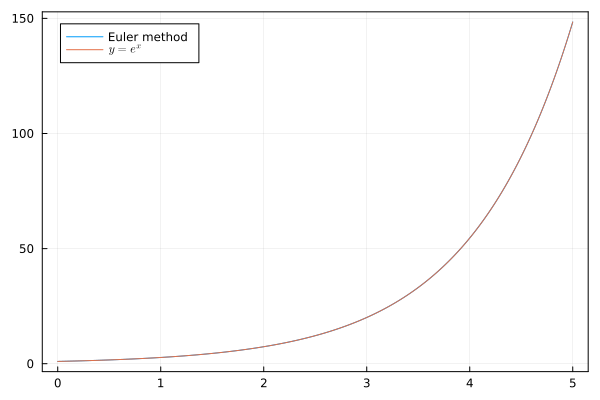

상미분 방정식
1 상미분 방정식 (Ordinary Differential Equations)
상미분 방정식은 하나의 독립변수에 대한 미분방정식이다. \(f(x)\) 에 대한 미분방정식이 \(f\) 에 대해 최대 \(n\) 차 미분까지 포함되었을 경우, \(n\)-차 상미분 방정식이라 한다.
오일러 방법 (Newton’s method)
\(y=f(x)\) 에 대해 미분방정식이
\[ \dfrac{dy}{dx} = f(x, y) \]
로 주어지고, 초기값 \(x_0,\,y_0\) 가 주어졌을 때 가장 간단하게 \(y=f(x)\) 를 구하는 방법이다. 테일러 전개를 이용하면,
\[ y(x + h) = y(x) + y'(x)\epsilon + \dfrac{y''(\xi)}{2}h^2 \]
를 만족하는 \(\xi\in (x,\, x+h)\) 이 존재한다는 것을 안다. \(|h | \ll 1\) 이면,
\[ y(x + h) \approx y(x) + y'(x)h \]
임을 이용하는 것이 오일러 벙법이다.
\(x_{k+1}=x_k+h\) 일 때,
\[ y_{k+1} = y(x_{k+1}) = y(x_k) + f(x_k, y_k)\, h \]
라고 하여 \(y\) 값을 구한다. 위의 식에서 \(f(x,\,y)\) 가 \(x\) 만의 함수일 때 아래와 같이 julia 로 구현 할 수 있다.
function ode_euler1(f::Function, x0::T, y0::T, Npoints::Integer, epsilon = 1.0e-6) where T<:AbstractFloat
eps = convert(T, epsilon)
xp = x0 .+ collect(0:1:(Npoints-1)) * eps
yp = zeros(T, length(xp))
yp[1] = y0
for i in 2:Npoints
yp[i] = yp[i-1]+ f(xp[i-1]) * eps
end
return xp, yp
end\(f(x,\,y)\) 가 변수 2개에 대한 함수일 때는 위의 함수를 약간 수정하여 구현 할 수 있을 것이다.
우리는 \(y'= e^x,\, y(0)=1\) 일 때, \(y=e^x\) 임을 알고 있다. 아래 그림은 위의 ode_euler 함수를 이용하여 미분방정식을 푼 값과, 실제 함수값을 비교해 보았다.

여기서는 비교작 잘 맞지만 오일러 방법은 잘 사용되지 않는다. 우선 앞서 보았듯이 테일러 전개를 이용한 근사를 사용했으므로 \(y_{k+1}-y_k\) 를 추산하는데 \(\dfrac{y''(x_k)}{2}h^2\) 정도의 에러가 발생 할 수 있다. 또한 \(y_{k+1}\) 이 \(y_k\)에 의존하여 계산되므로 오차값이 축적된다.
2차 룽게-쿠타 방법 (Runge-Kunta method)
역시 \[ \dfrac{dy}{dx} = f(x, y) \]
와 초기조건 \(y_0 = f(x_0)\) 가 주어졌다고 하자. 우리는 여기서,
\[ \dfrac{d^2y}{dx^2 } = \dfrac{d}{dx}f(x, \,y) = \dfrac{\partial f}{\partial x} + \dfrac{dy}{dx} \dfrac{\partial f}{\partial y} \]
라는 것을 안다. 이것을 이용하여 2차항까지 테일러 전개를 하면, \[ \begin{aligned} y(x+h) & = y(x) + \dfrac{dy}{dx}h + \dfrac{1}{2}\dfrac{d^2 y}{dx^2}h^2 + \cdots \\ &= y(x) + f(x, y)\, h + \dfrac{1}{2} \left(\dfrac{\partial f}{\partial x} + \dfrac{dy}{dx} \dfrac{\partial f}{\partial y}\right) h^2 + \cdots \\ &= y(x) + f(x, y)\, h + \dfrac{1}{2} \left(\dfrac{\partial f}{\partial x} + f(x,\,y) \dfrac{\partial f}{\partial y}\right) h^2 + \cdots \end{aligned} \]
이다. 이 때,
\[ \begin{aligned} k_1 &= f(x_n, y_n) \,,\\ k_2 &= f\left( x_n + \dfrac{h}{2},\, y_n + h \dfrac{k_1}{2}\right) \end{aligned} \]
라 하자. 그렇다면,
\[ \begin{aligned} k_2 &= f(x_n,\, y_n) + \dfrac{h}{2} \dfrac{\partial f}{\partial x}(x_n,\, y_n) + \dfrac{hk_1}{2} \dfrac{\partial f}{\partial y} (x_n,\, y_n) \\ &= k_1 + \dfrac{h}{2} \left(\dfrac{\partial f}{\partial x}(x_n,\, y_n) + f(x_n,\, y_n) \dfrac{\partial f}{\partial y}(x_n,\, y_n) \right) \end{aligned} \]
이므로,
\[ \begin{aligned} \dfrac{\partial f}{\partial x}(x_n,\, y_n) + f(x_n,\,y_n) \dfrac{\partial f}{\partial y} (x_n,\, y_n) & = \dfrac{2}{h}(k_2-k_1) \end{aligned} \]
이다. 이를 이용하면,
\[ y_{n+1} = y_n + k_1h + \dfrac{h^2}{2} \dfrac{2}{h} (k_2-k_1) = y_n+ \dfrac{h}{2}(k_1+k_2) \]
이다. 이것을 2차 룽게-쿠타 방법이라 한다.
4차 룽게-쿠타 방법
2차 룽게 쿠타 방법은 테일러 전개의 2차항까지 사용하였다. 4차 룽게 구타 방법은 테일러 전개의 4차항까지 사용한다. \[ y(x+h) = y(x) + y'(x) h + \dfrac{y''(x)}{2} h^2 + \dfrac{y^{(3)}(x)}{6}h^3 + \dfrac{y^{(4)}}{24}h^4 + \cdots \]
아래와 같이 \(k_1,\,k_2,\,k_3,\,k_4\) 를 정의하면, \[ \begin{aligned} k_{1} &= f(x_{n},y_{n}),\\ k_{2}&=\ f\!\left(x_{n}+{\frac {h}{2}},y_{n}+h{\frac {k_{1}}{2}}\right),\\ k_{3}&=\ f\!\left(x_{n}+{\frac {h}{2}},y_{n}+h{\frac {k_{2}}{2}}\right),\\ k_{4}&=\ f\!\left(x_{n}+h,y_{n}+hk_{3}\right). \end{aligned} \]
4차항까지의 테일러 전개가 아래와 같다는 것을 보일 수 있다. 아주 지루한 과정이므로 여기서는 생략한다. \[ \begin{aligned} y_{n+1}&=y_{n}+{\frac {1}{6}}\left(k_{1}+2k_{2}+2k_{3}+k_{4}\right)h,\\ t_{n+1}&=t_{n}+h \end{aligned} \]
오일러 방법, 2차 및 4차 룽게-쿠타 방법을 이용하여 상미분 방정식을 푸는 julia 코드는 아래와 같다. 모두 이변수 함수 f 와 초기값 x0, y0, 위의 \(h\) 에 해당하는 값 epsilon 과 초기 값을 포함하여 몇개의 점에 대해 얻을지에 대한 Npoints 를 인자로 받는다.
function ode_euler(f::Function, x0::T, y0::T, Npoints::Integer, epsilon = 1.0e-6) where T<:AbstractFloat
eps = convert(T, epsilon)
xp = x0 .+ collect(0:1:(Npoints-1)) * eps
yp = zeros(T, length(xp))
yp[1] = y0
for i in 2:Npoints
yp[i] = yp[i-1]+ f(xp[i-1], yp[i-1]) * eps
end
return xp, yp
end
function ode_runge_kutta2(f::Function, x0::T, y0::T, Npoints::Integer, epsilon = 1.0e-6) where T<:AbstractFloat
eps = convert(T, epsilon)
xp = x0 .+ collect(0:1:(Npoints-1)) * eps
yp = zeros(T, length(xp))
yp[1] = y0
for i in 2:Npoints
xn, yn = xp[i-1], yp[i-1]
k1 = f(xn, yn)
k2 = f(xn + eps/2, yn + k1*eps/2)
yp[i] = yn + (k1+k2)*eps/2
end
return xp, yp
end
function ode_runge_kutta4(f::Function, x0::T, y0::T, Npoints::Integer, epsilon = 1.0e-6) where T<:AbstractFloat
eps = convert(T, epsilon)
xp = x0 .+ collect(0:1:(Npoints-1)) * eps
yp = zeros(T, length(xp))
yp[1] = y0
for i in 2:Npoints
xn, yn = xp[i-1], yp[i-1]
k1 = f(xn, yn)
k2 = f(xn + eps/2, yn + eps*k1/2)
k3 = f(xn + eps/2, yn + eps* k2/2)
k4 = f(xn + eps, yn + eps*k3)
yp[i] = yn + (k1 + 2*k2 + 2*k3 + k4)*eps/6
end
return xp, yp
end간단한 사용법은 아래와 같다.
f1(x, y) = cos(0.1*x)*x
x0 = 0.0
y0 = 0.0
xp, yp1 = ode_euler2(f1, x0, y0, 10000, 1.0e-1);
xp, yp2 = ode_runge_kutta2(f1, x0, y0, 10000, 1.0e-1);
xp, yp3 = ode_runge_kutta4(f1, x0, y0, 10000, 1.0e-1);예제 (Examples)
단순 감쇠
\[ \dfrac{dy}{dt} = -a y(t),\, y(0)=y_0 \]
의 해가 \(y=y_0 e^{-at}\) 라는 것을 알지만, 이것을 수치해석적으로 풀어보기로 하자. 오일러 방법으로도 좋은 결과를 얻을 수 있으므로 오일러 방법만을 수행하기로 한다.
using Plots
a=1.0
f(x, y) = -a*y
xp, y_newton = ode_euler((x, y)->-a*y, 0.0, 1.0, 10000, 1.0e-3)
plot(xp, exp.(-a.*xp), label=L"e^{-ax}")
plot!(xp, y_newton, label="Euler method")이 결과는 다음과 같다.

단순 조화 진동자
\[ m \dfrac{d^2x}{dt^2} =- kx \] 를 단순조화진동자 문제라고 한다. 이와 같은 이차미분방정식은 \(x_1 = x,\, x_2 = \dfrac{dx_1}{dt}\) 라 놓으면
\[ \dfrac{dx_2}{dt} = -\dfrac{k}{m}x_1,\, \dfrac{dx_1}{dt} = x_2 \]
로 놓을 수 있다. \(\mathbf{x}(t) = \begin{bmatrix} x_1(t) \\ x_2(t) \end{bmatrix}\) 라 놓으면,
\[ \dfrac{d\mathbf{x}}{dt}= \begin{bmatrix} x_2 \\ - \dfrac{k}{m} x_1 \end{bmatrix} \]
이다.
이제 오일러 방법과 룽게-쿠타 방법을 벡터에 대한 미분방정식으로 확장하자. Julia 에서 제공하는 다중 디스패치(multiple dispatch) 는 함수 이름이 같을 때 인자의 갯수와 타입에 가장 적합한 함수를 자동으로 선택하여 실행시킨다.
벡터 \(\mathbf{x}\) 에 대한 시간 미분이 \(f(t,\, \mathbf{x})\) 라 하자. 즉,
\[ \dfrac{d\mathbf{x}}{dt} = f(t,\,\mathbf{x}) \]
function ode_euler(f::Function, t0::T, x0::Vector{T}, Npoints::Integer, epsilon = 1.0e-6) where T<:AbstractFloat
N = length(x0)
eps = convert(T, epsilon)
tp = t0 .+ collect(0:1:(Npoints-1)) * eps
xp = zeros(T, N, Npoints)
xp[:,1] = x0[:]
for i in 2:Npoints
xp[:, i] = xp[:, i-1] .+ f(tp[i-1], xp[:, i-1]) .*eps
end
return t, xp
end
function ode_runge_kutta2(f::Function, t0::T, x0::Vector{T}, Npoints::Integer, epsilon = 1.0e-6) where T<:AbstractFloat
N = length(x0)
eps = convert(T, epsilon)
tp = t0 .+ collect(0:1:(Npoints-1)) * eps
xp = zeros(T, N, Npoints)
xp[:,1] = x0[:]
for i in 2:Npoints
tn, xn = tp[i-1], xp[:, i-1]
k1 = f(tn, xn)
k2 = f(tn + eps/2, xn .+ (eps/2) .* k1)
xp[:, i] = xn .+ (k1 .+ k2) .* (eps/2)
end
return tp, xp
end
function ode_runge_kutta4(f::Function, t0::T, x0::Vector{T}, Npoints::Integer, epsilon = 1.0e-6) where T<:AbstractFloat
N = length(x0)
eps = convert(T, epsilon)
tp = t0 .+ collect(0:1:(Npoints-1)) * eps
xp = zeros(T, N, Npoints)
xp[:,1] = x0[:]
for i in 2:Npoints
tn, xn = t[i-1], xp[:, i-1]
k1 = f(tn, xn)
k2 = f(tn + eps/2, xn .+ (eps/2) .* k1)
k3 = f(tn + eps/2, xn .+ (eps/2) .* k2)
k4 = f(tn + eps, xn .+ eps.*k3)
xp[:, i] = xn .+ (k1 .+ 2*k2 .+ 2*k3 .+ k4).*(eps/6)
end
return tp, xp
end\(k=1.0,\, m=1.0\) 으로 정하여 오일러 방법과 4차 룽게-쿠타 방법을 이용하여 미분방정식을 다음과 같이 수치해석적으로 풀 수 있다.
k = 1.0
m = 1.0
f_ho(t, x) = return [x[2], -k/m*x[1]]
t, xp1 = ode_euler(f_ho, 0.0, [0.0 ; 1.0], 10000, 1.0e-3)
t, xp2 = ode_runge_kutta4(f_ho, 0.0, [0.0 ; 1.0], 10000, 1.0e-3)그 결과를 그래프로 그리면 다음과 같다.

감쇄 조화 진동자
\[ m \dfrac{d^2x}{dt^2} + \gamma \dfrac{dx}{dt} + kx=0 \]
로 기술되는 \(x(t)\) 를 감쇄조화진동자라 한다. 일단 방정식을 간단히 하자.
\[ \dfrac{d^2x}{dt^2} + \dfrac{\gamma}{m}\dfrac{dx}{dt} + \dfrac{k}{m} x = 0 \]
\(v=\dot{x}\) 라 하면 \(\dot{v} = -\dfrac{\gamma}{m}\dfrac{dx}{dt} - \dfrac{k}{m} x\) 이므로,
\[ \dfrac{d}{dt} \begin{bmatrix} x \\ v\end{bmatrix} = \begin{bmatrix} v \\ -\dfrac{\gamma}{m}v - \dfrac{k}{m} x\end{bmatrix} \]
이다.
많은 고전물리학 책에 이 감쇄조화진동자가 나와 있다. 감쇄조화진동자의 해는 다음과 같다.
\[ x(t) = \exp(-\lambda t) \left[ a \exp \left(\sqrt{-\omega_0^2} \right)+ b \exp \left(-\sqrt{-\omega_0^2}\right)\right]\qquad \text{where } \lambda =\dfrac{\gamma}{2m},\, \omega_0^2 = \dfrac{k}{m}-\dfrac{b^2}{4m^2} \]
이다. 여기서 \(a,\,b\) 는 초기조건 \(x(t=0),\, \dot{x}(t=0)\) 에 의해 정해진다.
\(\omega_0^2 >0\) 이면 \(x(t)\) 의 \([\,\cdots]\) 부분이 \(\cos\) 함수 (혹은 \(\sin\) 함수) 꼴로 나타날 수 있으므로 진폭이 점점 줄어드는 진동을 한다. 이를 underdamping 라 한다. $_0^2 <0 $ 이면 진동 없이 감쇄만 하게 되며 이를 overdamping 라 한다. \(\omega_0^2 = 0\) 일 경우를 critical damping 이라 한다.
\(m=1,\, \gamma=1,\, k=1\) 과 \(x(t=0)=0,\, \dot{x}(t=0)=1\) 일 때에 대해 오일러 방법, 2차 및 4차 룽게 쿠타 방법과, 해석적 해를 같이 그려보자.

진자(Pendulum) 문제

중력가속도 \(g\) 의 영향을 받는 길이 \(L\)인 진자의 운동은 다음의 미분방정식으로 기술된다.
\[ \dfrac{d^2 \theta}{dt^2} = -\dfrac{g}{L} \sin \theta \]
보통 \(\theta\) 가 아주 작을 때 \(\sin \theta \approx \theta\) 로 가정하여 풀면
\[ \dfrac{d^2\theta}{dt^2}= -\left( \dfrac{g}{L} \right)\theta \]
이므로 단순조화진동자 문제이다.
이제 수치적으로 풀어보자. \(\phi= \dfrac{d\theta}{dt}\), \(\mathbf{x} = \begin{bmatrix} \theta \\ \phi \end{bmatrix}\) 라 하면,
\[ \dfrac{d}{dt}\begin{bmatrix} \theta \\ \phi \end{bmatrix} = \begin{bmatrix} \phi \\ -g/L \sin \theta \end{bmatrix} \]
가 된다. \(g=1.0,\, L=2.0\) 으로 잡고 시간 간격을 \(1\times 10^{-2}\) 간격으로 미분방정식을 3가지 방법으로 풀면
g = 1
L = 2.0
Np = 10000
epsilon = 1.0e-2
θ0, ϕ0 = 0.0, 1.0
f_pendulum(t, x) = return [x[2], -g/L*sin(x[1])]
t, xp1 = ode_euler(f_pendulum, 0.0, [ θ0 ; ϕ0], Np, epsilon)
t, xp2 = ode_runge_kutta2(f_pendulum, 0.0, [θ0 ; ϕ0], Np, epsilon)
t, xp3 = ode_runge_kutta4(f_pendulum, 0.0, [θ0 ; ϕ0], Np, epsilon)
plot(t, xp1[1, :], label = "Euler", frame = :box, loc=:topcenter)
plot!(t, xp2[1, :], xlabel = "t", label = "RK2")
plot!(t, xp3[1, :], xlabel = "t", label = "RK4")
와 같다. 여기서는 세 방법이 시간이 지날수록 큰 차이를 보인다. 그러나 시간간격을 앞서보다 1/10 으로 줄여서 풀어 그리면 차이가 앞서보다 많이 주는 것을 볼 수 있다.

마치며
이번 장에서는 상미분 방정식을 푸는 가장 기본적인 방법인 오일러 방법과 2차, 4차 룽게-쿠타 방법을 배웠다. 수치해석이 늘 그렇듯이 간단한 미분방정식은 잘 풀 수 있지만 다양하고 복잡한 문제에서는 더 정확한 방법을 사용해야 한다.